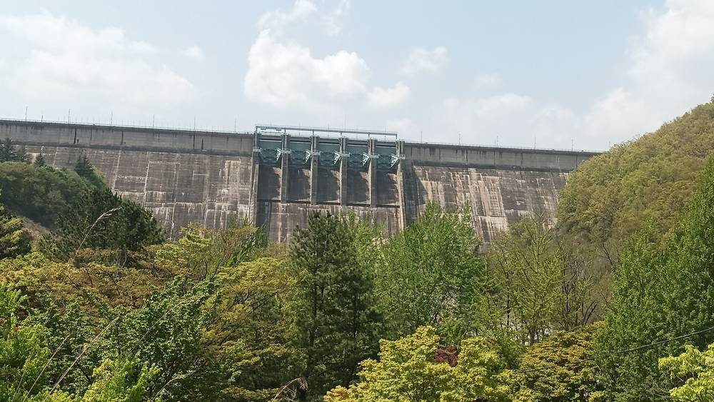

같은 댐 수상태양광, 합천은 주민 1,400여 명 투자로 가동하고 용담은 멈췄다…나주호 9년 갈등에 비춰 본 '주민 의견 묻는 순서'

합천댐은 군과 함께 25인 주민협의체 꾸려 설명회·공청회 10여 차례(수공 자료), 용담댐은 사업자 주도 설명회에 반발 끝 중단 통보…나주호는 허가 신청 뒤에야 의견 조회, 농어촌공사·사업자·나주시 답변은 아직
공공 수면에 들어서는 수상태양광이 주민 반대에 부딪혔을 때 주민 의견을 언제, 누가, 어디까지 묻느냐에 따라 경남 합천댐과 전북 용담댐의 경과가 크게 갈렸으며, 9년째 갈등이 이어지는 전남 나주호는 사업자 선정과 협약, 발전사업 허가 신청을 모두 마친 뒤에야 주민 의견을 묻기 시작했다는 분석이 나왔다. 한국수자원공사 사례 자료에 따르면 2021년 11월 가동한 합천댐 41MW 수상태양광은 수공이 합천군과 함께 이장단 중심의 25인 주민협의체를 꾸리고 설명회·공청회를 10차례 넘게 열었고, 댐 주변 20여 개 마을 주민 1,400여 명이 마을공동체를 통해 약 31억 원을 투자해 수익을 나눠 받고 있다. 전북 6개 시군의 광역 상수원인 용담댐에서는 수공이 약 432억 원을 들여 20MW 규모로 추진한 사업이 2024년 말 재추진됐지만 환경단체가 사업자 주도 설명회 대신 갈등조정 전문가가 중재하는 숙의 절차를 요구했고, 당시 계획상 주민이 참여할 수 있는 몫은 사업비의 4%, 수익 배분 대상은 반경 1km 안 정천면 550세대에 그쳤으며, 2025년 5월 진안 설명회가 반발 속에 끝난 뒤 수공은 6월 전북도에 사업 중단을 알렸다(허가 반납 여부는 확인되지 않았다). 나주호 사업을 맡은 한국농어촌공사는 올해 4월 2030년까지 전국 28개 지구에서 3GW를 개발하면서 수익 배분을 발전사업자 70%·공사 20%·주민 10%에서 주민·공사·사업자 '3:3:3'으로 바꾸고 주민 채권 참여 비율을 4%에서 8% 이상으로 올리겠다고 발표했지만, 이미 사업자를 정한 나주호에도 적용되는지는 확인되지 않았다. 나주호에서는 2023년 제3자 공모로 현대엔지니어링 컨소시엄이 우선협상대상자가 된 뒤 사업자가 20년간 약 373억 원을 다도면 주민에게 돌려주겠다는 상생안을 내놨으나 주민과 합의한 금액이 아니고 산정 방식도 공개되지 않았으며, 같은 공사의 경기 평택호 500MW 사업도 공고가 먼저 나온 뒤 평택시가 올해 4월 공식 반대에 나섰다. 이번 비교는 공개 자료를 바탕으로 한 것으로 합천댐 가동 뒤 환경 영향과 주민 만족도를 독립적으로 검증한 자료는 찾기 어렵고, 농어촌공사·사업자·나주시·나주시의회의 답변은 아직 나오지 않았으며, 사업 규모와 여건이 서로 달라 결과의 차이를 소통 방식만으로 설명할 수는 없다는 단서도 붙었다.
시민에너지 관점
세 곳의 결과를 소통 방식 하나로 설명할 수는 없지만, 사업의 틀과 수익 배분이 정해진 뒤에 주민을 부르면 설명회는 결정의 자리가 아니라 설득의 자리가 되고 만다는 점은 나주호와 용담댐에서 똑같이 드러난다. 호주 빅토리아주의 헵번 풍력은 주민들이 협동조합을 꾸려 계획 단계부터 출자하고 운영까지 맡은 호주 첫 공동체 소유 풍력발전소로, 주민이 처음부터 사업의 주인이었기에 협의가 곧 결정이 됐다. 주민과 먼저 틀을 짜면 사업이 늦어진다는 걱정도 있지만, 허가 신청 뒤의 설명회가 잇달아 무산되며 흘려보낸 나주호의 시간이 그보다 훨씬 길다. 농어촌공사와 나주시는 새 배분 방식을 나주호에도 적용할지부터 밝히고, 나주호 물을 쓰는 주민까지 포함한 의견 수렴 범위와 독립적인 조정 절차를 정한 뒤 주민이 지분으로 참여하는 설계를 다시 협의해야 한다.
출처: 세계중심나주뉴스 2026-11-03 편집국 원문 보기
同じダムの水上太陽光、陜川は住民1,400人余りの投資で稼働し龍潭は止まった…羅州湖9年の対立に照らした「住民の意見を聞く順序」
陜川ダムは郡と共に25人の住民協議体をつくり説明会・公聴会を10回余り（水資源公社資料）、龍潭ダムは事業者主導の説明会への反発の末に中断を通知…羅州湖は許可申請の後にようやく意見照会、農漁村公社・事業者・羅州市の回答はまだ
公共の水面に設置される水上太陽光が住民の反対に直面したとき、住民の意見をいつ、誰が、どこまで聞くかによって慶尚南道の陜川（ハプチョン）ダムと全羅北道の龍潭（ヨンダム）ダムの経過は大きく分かれ、9年にわたり対立が続く全羅南道の羅州（ナジュ）湖は、事業者選定・協約・発電事業許可申請をすべて終えた後になってようやく住民の意見を聞き始めたとの分析が出た。韓国水資源公社の事例資料によると、2021年11月に稼働した陜川ダムの41MW水上太陽光は、公社が陜川郡と共に里長団を中心とする25人の住民協議体をつくって説明会・公聴会を10回以上開き、ダム周辺20余りの村の住民1,400人余りが村の共同体を通じて約31億ウォンを投資し、収益の配分を受けている。全羅北道6市郡の広域上水源である龍潭ダムでは、公社が約432億ウォンを投じて20MW規模で進めた事業が2024年末に再推進されたが、環境団体は事業者主導の説明会ではなく紛争調整の専門家が仲介する熟議手続きを求めた。当時の計画で住民が参加できる持ち分は事業費の4%、収益配分の対象は半径1km以内の精川面550世帯にとどまり、2025年5月の鎮安での説明会が反発の中で終わった後、公社は6月に全羅北道へ事業中断を伝えた（許可返納の有無は確認されていない）。羅州湖の事業を担う韓国農漁村公社は今年4月、2030年までに全国28地区で3GWを開発するとともに、収益配分を発電事業者70%・公社20%・住民10%から住民・公社・事業者の「3:3:3」に改め、住民の債券参加比率を4%から8%以上に引き上げると発表したが、すでに事業者が決まった羅州湖に適用されるかは確認されていない。羅州湖では2023年の第三者公募で現代エンジニアリングのコンソーシアムが優先交渉対象者となった後、事業者が20年間で約373億ウォンを茶道面の住民に還元するとの相生案を示したが、住民と合意した金額ではなく算定方法も公開されておらず、同じ公社の京畿道平沢湖500MW事業でも公告が先に出た後、平沢市が今年4月に公式に反対を表明した。今回の比較は公開資料に基づくもので、陜川ダム稼働後の環境影響や住民満足度を独立して検証した資料は見当たらず、農漁村公社・事業者・羅州市・羅州市議会の回答はまだ出ておらず、事業規模や条件が異なるため結果の違いを意思疎通の方法だけで説明することはできないとの留保も付いている。
市民エネルギーの視点
三つの事例の結果を意思疎通の方法だけで説明することはできないが、事業の枠組みと収益配分が決まった後に住民を呼べば、説明会は決定の場ではなく説得の場になってしまうことは、羅州湖と龍潭ダムで同じように表れている。オーストラリア・ビクトリア州のヘップバーン風力は、住民が協同組合をつくって計画段階から出資し運営まで担ったオーストラリア初の地域共同体所有の風力発電所で、住民が最初から事業の主人だったからこそ協議がそのまま決定になった。住民と先に枠組みをつくれば事業が遅れるという懸念もあるが、許可申請後の説明会が相次いで流れて費やした羅州湖の時間の方がはるかに長い。農漁村公社と羅州市は新しい配分方式を羅州湖にも適用するのかをまず明らかにし、羅州湖の水を使う住民まで含めた意見聴取の範囲と独立した調整手続きを定めたうえで、住民が持ち分で参加する設計を改めて協議すべきだ。
出典: 世界中心羅州ニュース 2026-11-03 編集局 原文を読む
同样是大坝水上太阳能，陕川靠1,400余名居民投资投运，龙潭却停摆…以罗州湖9年纷争对照"征求居民意见的顺序"
陕川大坝与郡政府一起组建25人居民协议体，举办说明会和听证会10余次（水资源公社资料）；龙潭大坝在企业主导的说明会遭反对后通报中止…罗州湖在申请许可后才征求意见，农渔村公社、企业和罗州市尚未回应
有分析指出，建在公共水面上的水上太阳能项目遭遇居民反对时，何时、由谁、在多大范围内征求居民意见，使庆尚南道陕川大坝与全罗北道龙潭大坝走上了截然不同的道路；而纷争已持续9年的全罗南道罗州湖，则是在完成企业遴选、签约和发电事业许可申请之后，才开始征求居民意见。根据韩国水资源公社的案例资料，2021年11月投运的陕川大坝41MW水上太阳能项目，由公社与陕川郡共同组建以里长为中心的25人居民协议体，举办说明会和听证会10次以上，大坝周边20多个村庄的1,400余名居民通过村落共同体投资约31亿韩元，并分享收益。在作为全罗北道6个市郡广域水源的龙潭大坝，公社计划投入约432亿韩元建设20MW项目，2024年底重新推进，但环保团体要求以纠纷调解专家主持的协商程序取代企业主导的说明会；按当时计划，居民可参与的份额仅为项目费的4%，收益分配对象也仅限于半径1公里内精川面的550户，2025年5月镇安说明会在反对声中结束后，公社于6月向全罗北道通报项目中止（是否已交回许可尚未确认）。负责罗州湖项目的韩国农渔村公社今年4月宣布，到2030年将在全国28个地区开发3GW，并把收益分配从发电企业70%、公社20%、居民10%改为居民、公社、企业"3:3:3"，居民债券参与比例从4%提高到8%以上，但已确定企业的罗州湖是否适用尚未得到确认。罗州湖在2023年第三方公开招募中由现代工程联合体成为优先协商对象后，企业提出20年内向茶道面居民返还约373亿韩元的共生方案，但这并非与居民商定的金额，计算方式也未公开；同一公社推进的京畿道平泽湖500MW项目也是先发布公告，平泽市随后于今年4月正式表示反对。此次比较基于公开资料，目前难以找到独立检验陕川大坝投运后环境影响和居民满意度的资料，农渔村公社、企业、罗州市和罗州市议会也尚未回应；由于各项目规模和条件不同，结果差异不能仅用沟通方式来解释。
市民能源视角
三地的结果不能只用沟通方式来解释，但在项目框架和收益分配定下之后才请居民出面，说明会就只会成为说服的场合而非决定的场合，这一点在罗州湖和龙潭大坝同样显现。澳大利亚维多利亚州的赫本风电由居民组建合作社，从规划阶段就出资并负责运营，是澳大利亚第一座社区所有的风电场；正因为居民从一开始就是项目的主人，协商本身就成了决定。有人担心先与居民一起设计框架会拖慢项目，但罗州湖在申请许可后说明会接连流产所耗费的时间要长得多。农渔村公社和罗州市应首先说明新的分配方式是否适用于罗州湖，确定包括使用罗州湖水的居民在内的意见征集范围和独立的调解程序，再重新协商让居民以股份参与的方案。
来源: 世界中心罗州新闻 2026-11-03 编辑部 查看原文
Same dams, different outcomes for floating solar — 1,400 residents invested at Hapcheon while Yongdam stalled; what the "order of asking residents" means for Naju Lake's nine-year dispute
At Hapcheon Dam the water agency formed a 25-member residents' council with the county and held more than ten briefings and hearings (agency case material); at Yongdam a developer-led briefing met resistance and the project was halted. At Naju Lake residents were consulted only after the licence application, and the Rural Community Corporation, the developer and Naju City have yet to respond
When floating solar on public waters met local opposition, the timing, the host and the scope of resident consultation set Hapcheon Dam in South Gyeongsang and Yongdam Dam in North Jeolla on very different paths, according to a comparative analysis, while Naju Lake in South Jeolla, where a dispute has run for nine years, began asking residents only after the developer had been chosen, agreements signed and a generation licence applied for. According to case material from K-water (Korea Water Resources Corporation), the 41MW floating solar plant at Hapcheon Dam, running since November 2021, was preceded by a 25-member residents' council built around village heads, formed by the agency together with Hapcheon County, and more than ten briefings and public hearings; some 1,400 residents of about 20 villages around the dam invested roughly 3.1 billion won through village associations and receive a share of the revenue. At Yongdam Dam, a regional water source for six cities and counties in North Jeolla, K-water's 20MW project of about 43.2 billion won was revived at the end of 2024, but environmental groups demanded a deliberative process mediated by conflict-resolution experts rather than developer-led briefings; under the plan at the time residents could take up only 4% of the project cost and revenue sharing was limited to 550 households in Jeongcheon-myeon within 1km, and after a May 2025 briefing in Jinan ended amid protests the agency told the provincial government in June that the project was halted (whether the licence was returned has not been confirmed). The Korea Rural Community Corporation, which runs the Naju Lake project, announced in April that it would develop 3GW at 28 sites nationwide by 2030 and change revenue sharing from 70% developer, 20% corporation and 10% residents to an even "3:3:3" split among residents, the corporation and developers, while lifting residents' bond participation from 4% to 8% or more, but it has not been confirmed whether this applies to Naju Lake, where a developer has already been chosen. There, after a Hyundai Engineering consortium became preferred bidder in a 2023 third-party tender, the developer offered to return about 37.3 billion won to residents of Dado-myeon over 20 years, a figure not agreed with residents and whose basis has not been disclosed, and at the same corporation's 500MW Pyeongtaek Lake project in Gyeonggi the tender notice also came first, with Pyeongtaek City formally opposing it in April. The comparison draws on public records: no independent assessment of environmental effects or resident satisfaction at Hapcheon since operation could be found, the corporation, the developer, Naju City and the city council have not yet responded, and because the projects differ in scale and conditions the different outcomes cannot be explained by consultation methods alone.
Citizen Energy View
The three cases cannot be explained by consultation alone, but Naju Lake and Yongdam show the same thing: call residents in after the project's shape and revenue split are fixed, and a briefing becomes a place to persuade rather than to decide. Hepburn Wind in Victoria, Australia, the country's first community-owned wind farm, was financed by residents through a cooperative from the planning stage and run by them, so consultation and decision were the same act because residents owned the project from the start. Some worry that designing the framework with residents first slows projects down, yet Naju Lake has lost far more time to briefings that collapsed one after another after the licence application. The Rural Community Corporation and Naju City should first say whether the new sharing model applies to Naju Lake, set a consultation scope that includes residents who use the lake's water and an independent mediation process, and then renegotiate a design in which residents take part as shareholders.
Source: Segye Jungsim Naju News 2026-11-03 Editorial desk Read the original